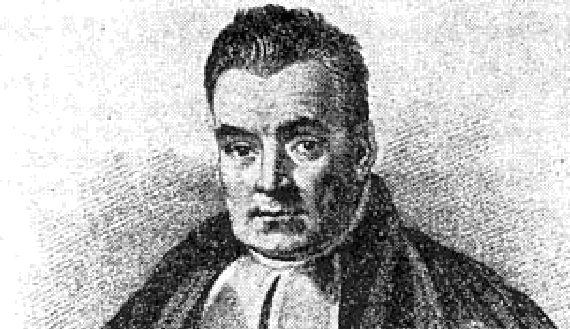

Session 1 Introduction to the course
- Students and instructor introduction
- Going over course syllabus
- A brief history of Bayesian inference
- The Bayesian way of thinking (statistical rethinking?)
1.1 About me
I am an Assistant Professor in Health Services Research (outcomes and evaluation method emphasis) at IHPME. I also hold a cross-appointment at the Division of Biostatistics. I received my PhD in Biostatistics from U of T under the supervision of Dr. Eleanor Pullenayegum.
My primary research focuses on developing methodology for statistical inference with complex longitudinal data in comparative effectiveness research. My areas of methodological interest include causal inference, Bayesian statistics, longitudinal data analysis, bias analysis, and semi-parametric/parametric joint modelling. If you are interested in working with me for your research/thesis projects, free feel to reach me.
Besides academic work and creating fun data visualizations in R (Covid Dashboard; 3D Christmas Tree), I love watercolour painting, taking contemporary dance classes in Toronto, and playing ‘piano’ as an adult beginner (though I am still waiting for my piano being shipped from Japan).
My work for Dr. Burns’s systematic review paper on the trustworthiness of published Clinical Practice Guidelines for Pharmacologic Treatments of Hospitalized Patients With COVID-19.
Please introduce yourselves You can share your program, research interest, learning goals, and hobby.
1.2 Syllabus
Detailed course syllabus is posted on Quercus.
Some important notes
- Course schedule
- LECTURE: 12:05pm - 1:45pm on Fridays
- TUTORIAL: 2:00pm - 3:00pm on Fridays
- Ratio may change substantially some weeks
- 15 mins break between lecture and tutorial
- Zoom office hour
- Thursdays between 12:00pm - 1:00pm
- Begins on January 13, 2021, ends on March 31, 2021
- I am happy to arrange for additional virtual office hours
- Course materials
- The lecture notes will be one main resource for this course.
- Online course note is open-access (GitHub Repository). It’s licensed under a Creative Commons Attribution-NonCommercial-ShareAlike 4.0 International License. Please do not use this material for commercial purposes.
- Course notes for latter sessions might not be available for view. I aim to publish the day before the scheduled lecture.
- Additional reading materials (e.g., articles) will be posted on Quercus
- Sample R scripts, data and brms code will be uploaded to Quercus.
- The lecture notes will be one main resource for this course.
- R and RStudio
- We will be using R via RStudio for this course. Key packages including tidyverse and brms.
- You are encouraged to write you assignment using Rmarkdown.
- ‘Grading’
- Participation under remote learning: accommodation and written explanations
- Assignments will be handed out and submitted on Quercus
- Can I work with peers?
- Auditing the course
- Welcome but with caveats (past experience from George)
- seriously committed (try not to miss classes)
- expected to have the same level of participation
- Quercus discussion board (Encourage!)
1.3 Some history
1.3.1 Bayesian history
Concepts of Bayesian approach first appeared in the famous paper of Reverent Thomas Bayes (1702-1761), “An essay towards solving a problem in the doctrine of chances” (Bayes 1763).

- Thomas Bayes was a Presbyterian Minister who is thought to have been born in 1701 and died 1761.
- Bayesian approach were never really practiced in Bayes’ lifetime.
- His work was developed and popularized by Pierre-Simon Laplace (1749–1827) in the early 19th century.
Though Bayes developed his philosophy during the 1740s, it wasn’t until the late twentieth century that this work reached a broad audience. During the more than two centuries in between, the frequentist philosophy dominated statistical research and practice.
- Frequentist ideas came to predominate in the 20th century as a result of the work of Fisher (1890-1962), Neyman (1894-1981) and Egon Pearson (1984-1980).
- Reasons why the Bayesian approach did not catch on until relatively recently: debate of Bayesian philosophy and computational power.
Bayes’ rule by Bayes
He essentially used probabilistic terms to express arguments about the uncertainty for the parameter of a binomial model
Given the number of times in which an unknown event has happened and failed: Required the chance that the probability of its happening in a single trial lies somewhere between any two degrees of probability that can be named.
- “unknown event” = e.g., Bernoulli trial
- “probability of its happening in a single trial” \(=p\)
- We may know ahead of time, or not (e.g. \(p=0.5\) for a fair coin)
The Monty Hall Problem and the Bayesian solution by Marilyn vos Savant
Suppose you’re on a game show, and you’re given the choice of three doors: Behind one door is a car; behind the others, goats. You pick a door, say No. 1, and the host, who knows what’s behind the doors, opens another door, say No. 3, which has a goat. He then says to you, “Do you want to pick door No. 2?” Is it to your advantage to switch your choice?

From wikipedia, Vos Savant’s response was that the contestant should switch to the other door. Many readers of vos Savant’s column refused to believe switching is beneficial and rejected her explanation. After the problem appeared in Parade, approximately 10,000 readers, including nearly 1,000 with PhDs, wrote to the magazine, most of them calling vos Savant wrong (Tierney 1991).
We will revisit this problem in session 2 on Probability. I provided a short R simulation below to demonstrate why the player should choose to switch door - higher chance of winning the game.
Monty Hall simulation in R
set.seed(890123)
monty <- function(switch=F) {
doors <- sample(c('car', 'goat', 'goat'), size=3, replace = FALSE)
pick <- sample(1:3, size=1, replace = FALSE) #randomly pick 1 door out of the three doors;
# Using logic true or false to determine a win;
if (switch==T) {
# if you chose to switch, you win if the car is not behind the picked door;
win <- ifelse(doors[pick] != 'car', 1, 0)
} else {
# if you chose not to switch, you win if the car is behind the picked door;
win <- ifelse(doors[pick] == 'car', 1, 0)
}
return(win) #return the winning outcome for each game;
}
# run the game for 1000 iterations;
# and record a vector of winning status for not switch and switch;
no_switch_win <- sapply(1:1000, FUN=function(i) monty(switch=F))
switch_win <- sapply(1:1000, FUN=function(i) monty(switch=T))print(paste("Chance of winning if we always not switch: ", sum(no_switch_win)/1000))## [1] "Chance of winning if we always not switch: 0.37"print(paste("Chance of winning if we always switch: ", sum(switch_win)/1000))## [1] "Chance of winning if we always switch: 0.668"The recent rise in popularity
Advances in computing
Re-evaluation of “subjectivity” of Bayesian approach due to its use of priors
Key discussion on subjectivity by Gelman (Gelman and Hennig 2017)
In discussions of the foundations of statistics, objectivity and subjectivity are seen as opposites. Objectivity is typically seen as a good thing; many see it as a major requirement for good science. Bayesian statistics is often presented as being subjective because of the choice of a prior distribution.
It has been argued that the subjective–objective distinction is meaningless because all statistical methods, Bayesian or otherwise, require subjective choices, but the choice of prior distribution is sometimes held to be particularly subjective because, unlike the data model, it cannot be determined even in the asymptotic limit.
1.3.2 History of this course
Prof. George Tomlinson created this course back in 2004
- He taught this course from 2004 to 2017 and again from 2020 to 2021. Prof. Nicholas Mitsakakis taught it in 2019.
- This is my first time teaching this course. We are making history together =)
- I have borrowed a lot of course materials from George. Thank you George!
- Dr.Sindu Johnson and Juan Pablo will be our guest lecturers this year!
1.4 Thinking like a Bayesian using the concept of probability
1.4.1 Probability is not unitary
- Mathematically probability is clearly defined (a quantity between 0 and 1 etc., we will talk about this in session 2)
- There are a few ways of interpreting probability, most notably, long run relative frequency and subjective probability.
1. Long run relative frequency
The classical or frequentist way of interpreting probability is based on the proportion of times an outcome occurs in a large (i.e. approaching infinity) number of repetitions of an experiment.
- This view has various serious problems, including that it requires the outcome to be observable and the “experiment” to be indeed repeatable!
2. Subjective probability
The alternative way (essentially proposed by Bayes, LaPlace, other later prominent Bayesians) is the subjective probability.
- It encompasses one’s views, opinions or beliefs about an event or statement.
- This event does not have to be repeatable or the outcome observable.
- It is based on belief.
- Using this approach, we can express the uncertainty around parameters using probability distributions (e.g., beta distribution for the risk \(\theta\) of death after an operation)
Example from (Johnson, Ott, and Dogucu, n.d.)
Different interpretation of probability/uncertainty
- When flipping a fair coin, we say that “the probability of flipping Heads is 0.5.” How do you interpret this probability?
- If I flip this coin over and over, roughly 50% will be Heads.
- Heads and Tails are equally plausible.
- Both a and b make sense.
- An election is coming up and a pollster claims that candidate A has a 0.6 probability of winning. How do you interpret this probability?
- If we observe the election over and over, candidate A will win roughly 60% of the time.
- Candidate A is much more likely to win than to lose.
- The pollster’s calculation is wrong. Candidate A will either win or lose, thus their probability of winning can only be 0 or 1.
In the coin flip example, a Bayesian would conclude that Heads and Tails are equally likely. In contrast, a frequentist would conclude that if we flip the coin over and over and over, roughly 1/2 of these flips will be Heads.
1.4.2 Bayes’ Rule
Bayes’ rule specifies how a prior probability \(P(H)\) of event \(H\) is updated in response to the evidence/data \(E\) to obtain the posterior probability \(P(H|E)\). \[ P(H|E) = \frac{P(E|H)P(H)}{P(E)} \propto P(E|H)P(H) \]
- Event \(H\) represents a particular hypothesis1 (or model or parameter)
- Event \(E\) represents observed evidence (or data or information)
- \(P(H)\) is the unconditional or prior probability of \(H\) (prior to observing \(E\))
- \(P(H|E)\) is the conditional or posterior probability of \(H\) after observing evidence \(E\).
- \(P(E|H)\) is the likelihood of evidence \(E\) given hypothesis (or model or parameter) \(H\)
- The symbol \(\propto\) “proportional to,” i.e., the right hand side needs to be divided by a normalizing factor (commonly viewed as a “constant” under Bayesian framework).
The Bayesian approach provides a probability of the hypothesis given the data/evidence, which is something generally highly desirable from a scientific perspective.
1.4.3 The Scientific Method in steps
- Define the question or problem
- Assess the currently available information decide whether it is sufficient or not 2.1 If yes: conclusions, decisions, actions 2.2 If no, proceed to step 3.
- Determine what additional information is needed and design a study or experiment to obtain it
- Carry out the study designed in step 3.
- Use the data obtained in step 4 to update what was previously known. Return to step 2.
Bayesian Advantages: Bayesian methods are especially good in step 2 and 5
- They can be used for representing well existing knowledge and also to explicitly update uncertainty using new evidence.
- This is a done in a coherent, natural way.
The ELISA test for HIV was widely used in the mid-1990s for screening blood donations. As with most medical diagnostic tests, the ELISA test is not perfect.
- If a person actually carries the HIV virus, experts estimate that this test gives a positive result 97.7% of the time. (This number is called the sensitivity of the test.)
- If a person does not carry the HIV virus, ELISA gives a negative (correct) result 92.6% of the time (the specificity of the test).
- Assume the estimated HIV prevalence at the time was 0.5% of (the prior base rate).
Given a randomly selected individual tested positive; we are interested in the conditional probability that the person actually carries the virus.
Suppose a randomly selected individual tested positive:
- If we know the likelihood of getting a positive test if HIV is truly present, \(P(T^+ \mid D^+) = 0.977\),
- and the likelihood of getting a positive test if HIV is not present, \(P(T^+ \mid D^-) = 1 - 0.926 = 0.074\),
- Using the Bayes’ Rule, we can obtain the posterior probability of the disease given the positive test result,
\[\begin{aligned} P(D^+ \mid T^+) & = \frac{P(T^+ \mid D^+)P(D^+)}{P(T^+)} \\ & = P(T^+ \mid D^+) \frac{P(D^+)}{P(T^+)}\\ \Bigg( \begin{matrix} \text{Probability of} \\ \text{HIV given} \\ \text{a positive} \\ \text{test} \end{matrix} \Bigg) & = \Bigg(\begin{matrix} \text{Probability of} \\ \text{a positive} \\ \text{test among} \\ \text{HIV patients} \end{matrix} \Bigg) \times \frac{\text{Probability of having HIV}}{\text{Probability of a positive test}} \\ & \propto \Bigg(\begin{matrix} \text{Probability of} \\ \text{a positive} \\ \text{test among} \\ \text{HIV patients} \end{matrix} \Bigg) \times \text{Probability of having HIV} \end{aligned}\]
We can see here the posterior probability is an updated belief!
To summarize conceptually
- we have some belief about the state of the world, expressed as a mathematical model (such as the linear model used in regression).
- The Bayesian approach provides an updated belief as a weighted combination of prior beliefs regarding that state and the currently available evidence, with the possibility of the current evidence overwhelming prior beliefs, or prior beliefs remaining largely intact in the face of scant evidence.
\[ \text{updated belief} = \text{current evidence} \times \text{prior belief or evidence} \]
References
We’re using “hypothesis” in the sense of a general scientific hypothesis, not necessarily a statistical null or alternative hypothesis.↩︎